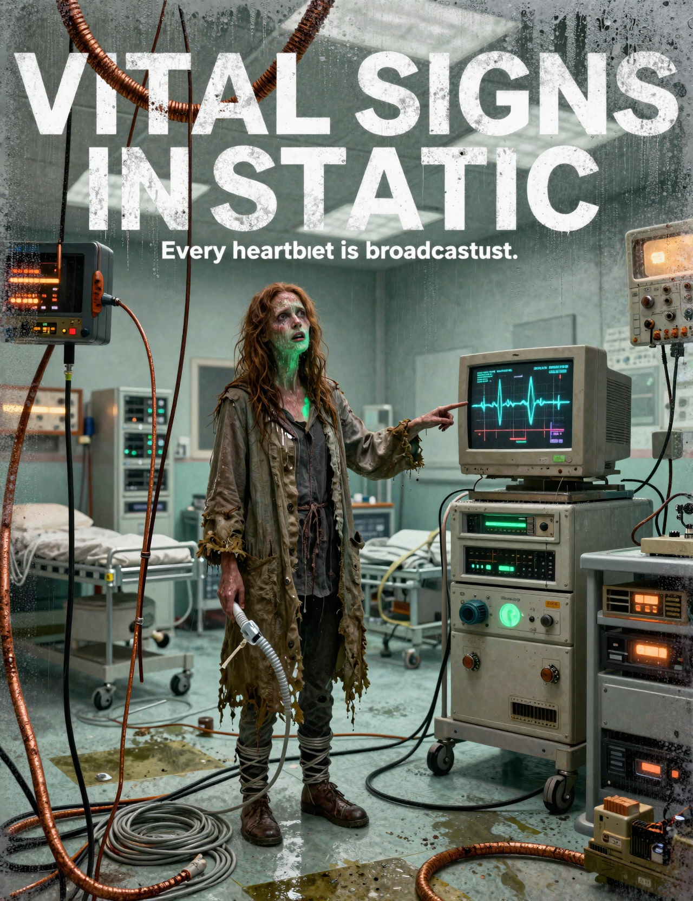
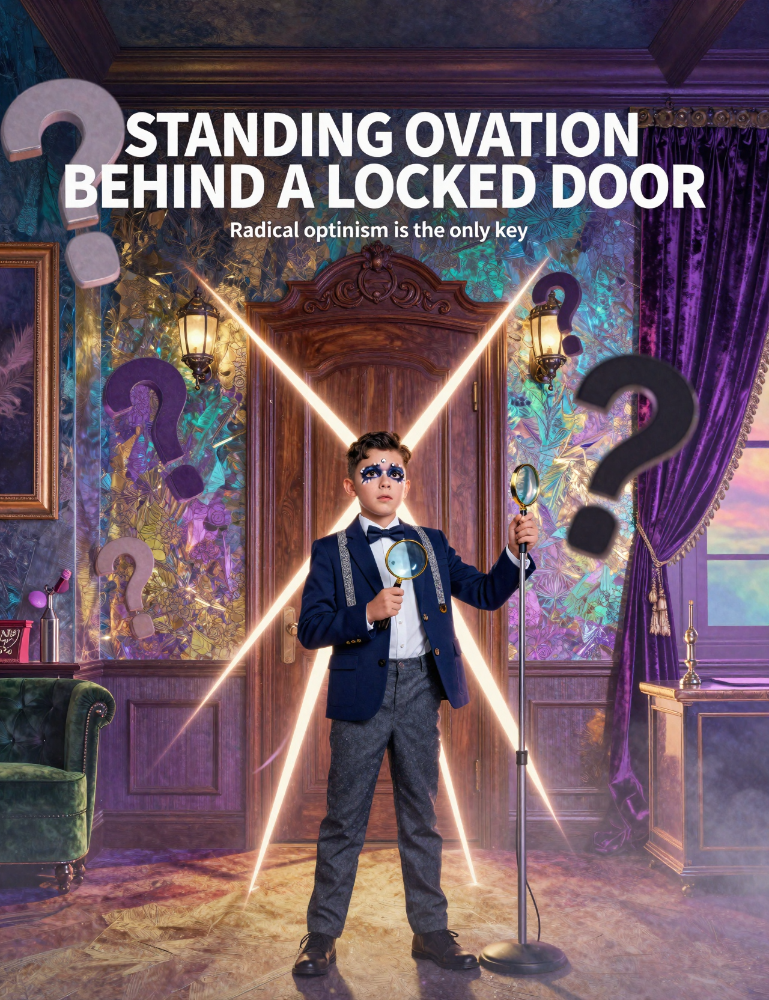

She attempts to diagnose a mysterious ailment in a sterile hospital where the heart monitors are broadcasting her thoughts back through tangled Ethernet cables. Every time she checks a patient’s vitals, she quotes a classic film, turning frantic triage into an impromptu Oscar ceremony while sweat drips onto the keyboard. As fever dreams collide with dial-up screeches, the medical staff becomes convinced the bog witch is actually the hospital’s new central server. She must decode the ward's operating system before her own pulse syncs permanently with the mainframe.
Cold open: a Bog Witch who only speaks in movie quotes, alone, in the rain. The genre? Medical Drama (very sweaty). The vibe? Unmistakably Y2K Techno-Paranoia. Cue title card.
A towering movie poster depicts a damp bog witch standing center frame inside a claustrophobic early-2000s hospital triage ward, her weathered linen coat dripping peat water onto scuffed linoleum tiles while tangled silver ethernet cables coil around her ankles like medical tubing. Her face glows under the sickly green light of a bulky CRT heart monitor, capturing an expression of intense exhaustion as she points toward a flicking wall screen displaying scrolling EKG waveforms. Large bold movie title text reading "VITAL SIGNS IN STATIC" spans across the top in stark white letters against condensation-fogged glass and buzzing server racks. Beneath it, a crisp tagline reads "Every heartbeat is broadcasting." The composition uses desaturated clinical teals, rusted copper wiring, and humid amber fluorescents to emphasize the oppressive moisture and analog tech dread of a late-night medical crisis.

When theater-kid-turned-TED-sensation Leo Vance locks himself in a soundproofed convention suite, he discovers his rival keynote speaker is missing, the door remains sealed from the inside, and the catering staff has vanished without a single mic check. Refusing to panic, Leo treats the locked-room murder like opening night, deploying glitter-bomb logic and aggressively sunny side-eye to decode the clues. He adjusts his blazer, takes a deep breath, and begins to improvise. But as the walls literally close in, he must master radical hopepunk optimism to keep his sanity—and his standing ovation—before the final act rolls credits forever.
Logline: When a Theater Kid Detective doing a TED Talk circuit discovers their quiet life is actually a Locked Room Mystery, they must master the genre conventions of Hopepunk to survive.
A cinematic movie poster featuring a dramatically lit hotel convention suite where the walls shimmer with iridescent gold and twilight purple hues. At the center stands a wide-eyed theater kid detective wearing a sharp navy blazer paired with stage-lights makeup and glitter-dusted suspenders, holding a magnifying glass that doubles as a microphone stand. Behind him looms an ornate mahogany door sealed shut by glowing geometric light beams, while floating set pieces like oversized question marks and velvet curtains drift in the background. Bold white typography reading "STANDING OVATION BEHIND A LOCKED DOOR" spans across the top third of the poster, with a smaller tagline underneath that reads "Radical optimism is the only key." The lighting mixes dramatic stage spotlights with soft hopeful sunrise gradients, creating a painterly, surreal atmosphere that feels both mysterious and fiercely uplifting.